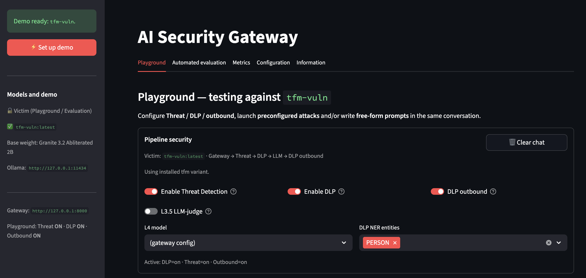

Drop-in middleware between apps and any LLM provider. Pipeline: sanitisation and OWASP-style filters,
LLM-as-judge in parallel with DistilBERT, bilingual DLP, then LiteLLM routing. Evaluation battery
17/17 PASS; ~175 pytest. Repo:
github.com/r4fik1/ai-security-gateway.

A diagram, trust boundaries, and a human gate — the same habit as a Vault ceremony, applied to tools and mitigations.

A replayable suite — layer hit, HTTP status, latency — instead of a screenshot of a chat.
If every client talks to the same Base URL, notebooks, chatbots and batch jobs share one pipeline.